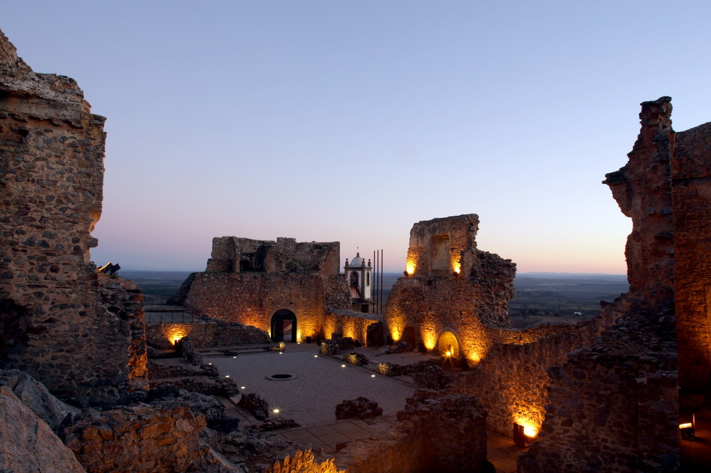
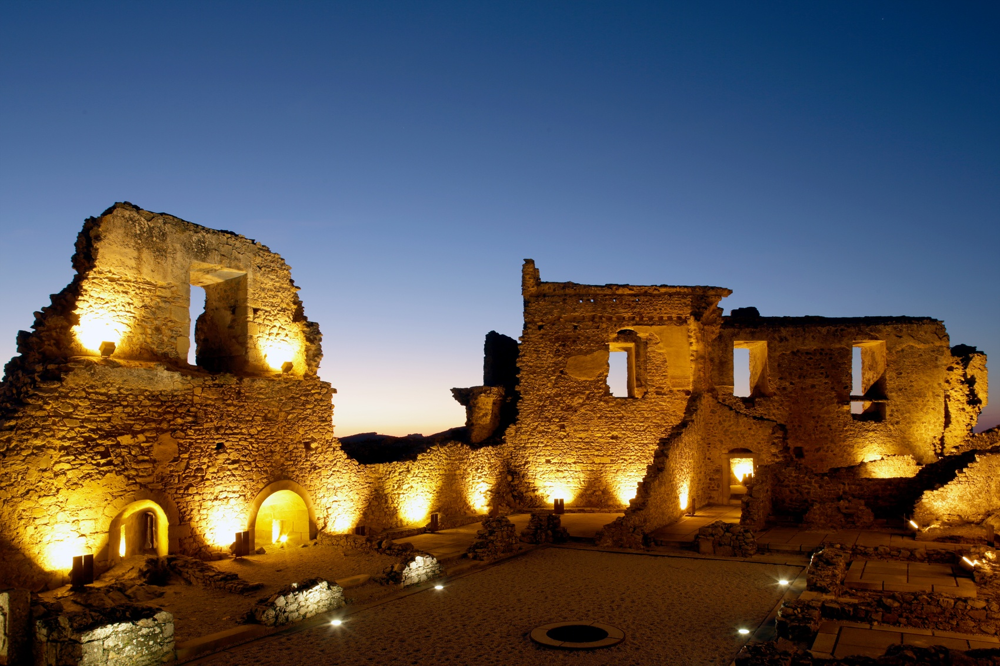
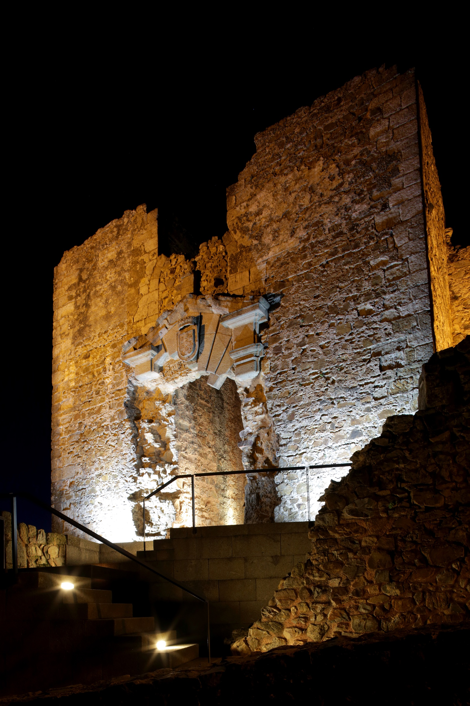

Castelo Rodrigo
Sobre
Castelo Rodrigo é uma aldeia histórica do distrito da Guarda, situada no topo de uma colina junto à fronteira com Espanha. Tem origens medievais, integrou Portugal após o Tratado de Alcanizes (1297) e destaca-se pelo castelo em ruínas, ruas em pedra e pelo pelourinho. É conhecida pela Batalha de Castelo Rodrigo (1664) e faz parte da Rede das Aldeias Históricas de Portugal.

História

Castelo Rodrigo está rodeado por uma cintura amuralhada inicialmente composta por 13 torreões (à semelhança de Ávila). Mantém a sua traça medieval, que irradia da alcáçova e acompanha a topografia. Pelas suas ruas encontram-se casas interessantes, umas manuelinas, outras construções árabes, como a casa nº 32, com inscrição e uma carranca, para além da cisterna, de 13 m de fundo, com uma porta em arco de ferradura e outra ogival.

Estando na rota de peregrinos a Compostela, aqui se ergueu a Igreja de N. Sra. de Rocamador, fundada por uma confraria de frades hospitaleiros vindos de França no séc. XIII. Por ter tomado partido por Castela na crise de 1383-85, D. João I castigou Castelo Rodrigo, mandando que o seu brasão ficasse com as armas reais invertidas e a vila dependente de Pinhel. O pelourinho manuelino - de gaiola e grandes dimensões, atesta o poder municipal, regulamentado pelo foral novo de 1508, altura em que D. Manuel, o Rei Venturoso, mandou repovoar a vila e refazer o castelo.
Sob domínio filipino instituiu-se o condado e marquesado de Castelo Rodrigo na pessoa de Cristóvão de Moura, que mandou edificar um Palácio. Após a Restauração este foi destruído pelo povo. No largo de S. João, o padrão assinala e comemora a restauração da independência nacional.

Ainda nas lutas contra Espanha, a vila sofreu em 1664 o cerco do Duque de Ossuna, tendo a sua guarnição de 150 homens resistido heroicamente até à chegada de reforços, travando-se a batalha da Salgadela, junto ao Mosteiro de Santa Maria de Aguiar. Conta-se que o Duque de Ossuna e D. João d’Áustria escaparam disfarçados de frades.
Após as Guerras da Restauração, Castelo Rodrigo foi perdendo a sua importância, e a 25 de Junho de 1836, por Carta Régia de D. Maria II, a sede de concelho foi transferida para Figueira de Castelo Rodrigo.
O que ver